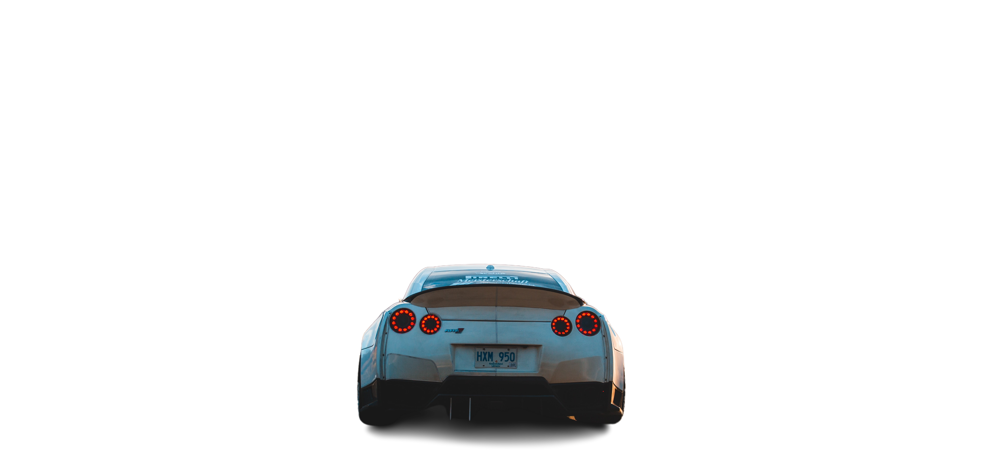
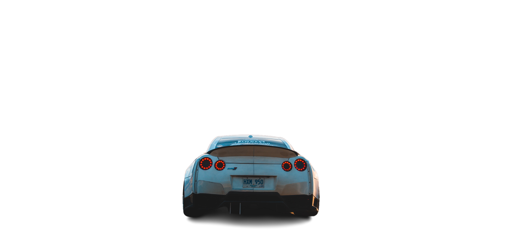

CAR RACING
Racing Time
Car racing is a thrilling and high-octane sport that has captivated audiences around the world for decades. It involves highly skilled drivers competing against each other in fast and powerful vehicles on a closed circuit or designated race track.
In car racing, drivers showcase their driving skills, reflexes, and tactical decision-making abilities as they maneuver their cars at incredibly high speeds, often reaching well over 200 miles per hour. The intense competition and the pursuit of victory create an electrifying atmosphere for both participants and spectators alike.
Sports
Sports car racing, also known as endurance racing or GT (Grand Touring) racing, is a form of motorsport that involves racing high-performance sports cars on closed circuits or road courses. It typically involves long-distance races that can last several hours or even 24 hours, testing the durability of both the cars and the drivers
Sports car racing includes a wide variety of vehicle types. These can range from purpose-built prototypes (such as LMP1 cars) to modified production-based cars (such as GT3 or GTE vehicles). The technical regulations for each class define the specifications and modifications allowed for the participating cars.
Drag
Drag car racing, also known as drag racing, is a type of motorsport that involves two vehicles competing in a straight-line race to determine the fastest car. The races take place on a specially prepared track called a drag strip.
The main objective in drag racing is to achieve the fastest acceleration from a standing start. The vehicles line up side by side at the starting line, known as the Christmas Tree, and once the race begins, they accelerate as quickly as possible down the track.
Rallying
Rallying car racing, commonly known as rally racing or rallying, is a popular motorsport discipline that involves racing on closed public roads or off-road terrain. It is a unique form of racing that combines speed, endurance, and precision driving skills.
In a rally race, drivers compete against the clock, aiming to complete a series of stages in the shortest time possible. The stages are typically held on a variety of surfaces, including gravel, tarmac, snow, or a combination of these. The races often take place in diverse and challenging environments, such as forests, mountains, deserts, or countryside.